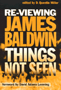
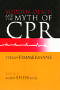
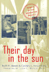

|
|
Arabs
in America
Building a New Future
Suleiman, Michael
Setting the record straight about Arab American culture
368 pp • 7x10 • Fall 1999
paper 1-56639-727-8
EAN 978-1-56639-727-8
cloth 1-56639-726-X
EAN 978-1-56639-726-1
|
|
|
Black
Power, White Blood
The Life and Times of Johnny Spain
Andrews, Lori
A struggle to transcend race and find justice
352 pp • 5.5x8.25 • Fall 1999
paper 1-56639-750-2
EAN 978-1-56639-750-6
|
|
|
Crowding
Out Latinos
Mexican Americans in the Public Consciousness
Portales, Marco
A provocative study of Latino education, media representation,
and Chicano literature
240 pp • 6x9 • Fall 1999
paper 1-56639-743-X
EAN 978-1-56639-743-8
cloth 1-56639-742-1
EAN 978-1-56639-742-1
|
|
|
Drumming
for the Gods
The Life and Times of Felipe García Villamil, santero, palero,
and abakuá
Velez, Maria Teresa
The world through the eyes of a master religious drummer
256 pp • 6x9 • Fall 1999
paper 1-56639-731-6
EAN 978-1-56639-731-5
cloth 1-56639-730-8
EAN 978-1-56639-730-8
|
|
|
Fishy
Business
Salmon, Biology, and the Social Construction of Nature
Scarce, Rik
Where does society end and nature begin?
272 pp • 6x9 • Fall 1999
paper 1-56639-729-4
EAN 978-1-56639-729-2
cloth 1-56639-728-6
EAN 978-1-56639-728-5
|
| 
|
How
Did You Get to Be Mexican?
A White/Brown Man’s Search for Identity
Johnson, Kevin R.
A readable account of a life spent in the borderlands between racial
identity
New in Paperback!
264 pp • 6x9 • Fall 1998
paper 1-56639-651-4
EAN 978-1-56639-651-6
|
|
|
Laboring
for Rights
Unions and Sexual Diversity Across Nations
Hunt, Gerald
A global look at labor unions and sexual minorities
328 pp • 7x10 • Fall 1999
paper 1-56639-718-9
EAN 978-1-56639-718-6
cloth 1-56639-717-0
EAN 978-1-56639-717-9
|
|
|
Making
History Matter
Dawidoff, Robert
A historian with a broad view of American culture's movers and
shapers
304 pp • 6x9 • Fall 1999
paper 1-56639-749-9
EAN 978-1-56639-749-0
cloth 1-56639-748-0
EAN 978-1-56639-748-3
|
|
|
The
Man in the Dugout
Baseball's Top Managers and How They Got That Way
Koppett, Leonard
A Hall of Fame sportsriter analyzes managers' stragegies
Expanded Edition
424 pp • 7x10 • Fall 1999
cloth 1-56639-745-6
EAN 978-1-56639-745-2
|
|
|
Marriage
in a Culture of Divorce
Hackstaff, Karla B.
The experience of married life in different eras
292 pp • 6x9 • Fall 1999
paper 1-56639-725-1
EAN 978-1-56639-725-4
cloth 1-56639-724-3
EAN 978-1-56639-724-7
|
|
|
My
Father's Testament
Memoir of a Jewish Teenager, 1938-1945
Gastfriend, Edward, and Björn Krondorfer
An intimate account of the life of a Jewish boy during the Holocaust
187 pp • 5.5x8.25 • Fall 1999
paper 1-56639-735-9
EAN 978-1-56639-735-3
cloth 1-56639-734-0
EAN 978-1-56639-734-6
|
| 
|
National
Insecurity
U.S. Intelligence After the Cold War
Eisendrath, Craig, and Tom Harkin
Practical solutions for the reform of national security operations
296 pp • 6x9 • Fall 1999
cloth 1-56639-744-8
EAN 978-1-56639-744-5
|
|
|
The
Philadelphia Orchestra
A Century of Music
Philadelphia Orchestra Assoc. and John Ardoin
Dedicated to the millions of people who have experienced the joy
of The Philadelphia Orchestra
256 pp • 9x12 • Fall 1999
cloth 1-56639-712-X
EAN 978-1-56639-712-4
|
| 
|
Re-Viewing
James Baldwin
Things Not Seen
Miller, D. Quentin, and David Adams Leeming
A focus on Baldwin as an experimental writer
312 pp • 6x9 • Fall 1999
paper 1-56639-737-5
EAN 978-1-56639-737-7
cloth 1-56639-736-7
EAN 978-1-56639-736-0
|
|
|
Sisters
on Screen
Siblings in Contemporary Cinema
Reuschmann, Eva
A rare look at the construction of female identity in post-Sixties
cinema
304 pp • 6x9 • Fall 1999
paper 1-56639-747-2
EAN 978-1-56639-747-6
cloth 1-56639-746-4
EAN 978-1-56639-746-9
|
|
|
Smuggled
Chinese
Clandestine Immigration to the United States
Chin, Ko-lin, and Douglas S. Massey
The international traffic in human beings
296 pp • 6x9 • Fall 1999
paper 1-56639-733-2
EAN 978-1-56639-733-9
cloth 1-56639-732-4
EAN 978-1-56639-732-2
|
|
|
Striking
Steel
Solidarity Remembered
Metzgar, Jack
A middle-class son remembers his father's union and the steel strike
of 1959
320 pp • 6x9 • Fall 1999
paper 1-56639-739-1
EAN 978-1-56639-739-1
cloth 1-56639-738-3
EAN 978-1-56639-738-4
|
|
|
The
Struggle for Control of Public Education
Market Ideology vs. Democratic Values
Engel, Michael
A timely call for a return to democratic values in educational
reform
223 pp • 5.5x8.25 • Fall 1999
paper 1-56639-741-3
EAN 978-1-56639-741-4
cloth 1-56639-740-5
EAN 978-1-56639-740-7
|
| 
|
Sudden
Death and the Myth of CPR
Timmermans, Stefan, and Bern Shen
Restoring dignity to sudden death
272 pp • 6x9 • Fall 1999
paper 1-56639-716-2
EAN 978-1-56639-716-2
cloth 1-56639-715-4
EAN 978-1-56639-715-5
|
| 
|
Their
Day in the Sun
Women of the Manhattan Project
Howes, Ruth H., Caroline C. Herzenberg, and Ellen C. Weaver
The hidden story of the contribution of women in the effort to
develop the atomic bomb
280 pp • 6x9 • Fall 1999
cloth 1-56639-719-7
EAN 978-1-56639-719-3
|
|
|
Veils
and Daggers
A Century of National Geographic's Representation of the
Arab World
Steet, Linda
Critically unpacks National Geographic's portrayal of the Arab
World
224 pp • 6x9 • Fall 1999
paper 1-56639-752-9
EAN 978-1-56639-752-0
cloth 1-56639-751-0
EAN 978-1-56639-751-3
|
|
|
We
Are a People
Narrative and Multiplicity in Constructing Ethnic Identity
Spickard, Paul, and W. Jeffrey Burroughs
The stories we tell about ourselves
304 pp • 7x10 • Fall 1999
paper 1-56639-723-5
EAN 978-1-56639-723-0
cloth 1-56639-722-7
EAN 978-1-56639-722-3
|
|
|
Women
Living with Self-Injury
Hyman, Jane Wegscheider
A compassionate view of a stigmatized condition
248 pp • 6x9 • Fall 1999
paper 1-56639-721-9
EAN 978-1-56639-721-6
cloth 1-56639-720-0
EAN 978-1-56639-720-9
|